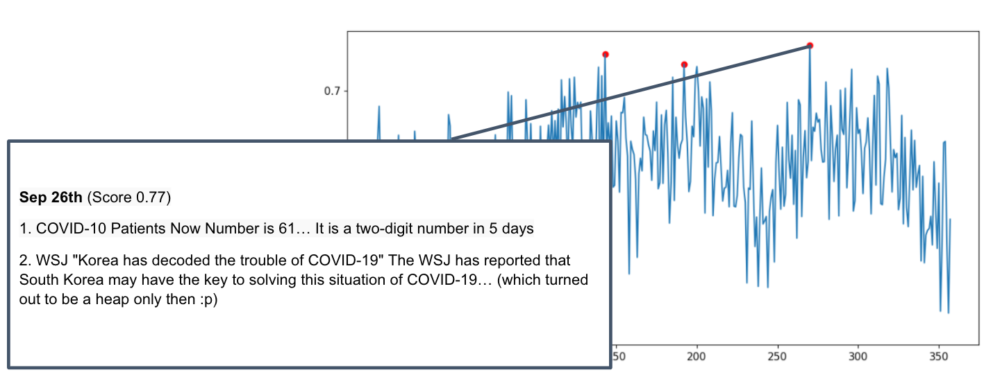

Detecting emotions of the society through internet words
Our emotions are easily reflected onto the words we write and speak. Detecting the anomaly in these words could mean a significant emotional change in the society.
Our emotions are easily reflected onto the words we write and speak. Detecting the anomaly in these words could mean a significant emotional change in the society.
Reading "Detection of the Change in Blogger Sentiment using Multivariate Control Charts" (2013) by Jeounghoon Moon and Sungim lee, our team member Soojin thought that the current prevalent emotions in the society can also be detected via the 'words of the people'.
Can we detect societal problems by detecting the sentiment anomaly from the internet such as the twitter posts? After collecting sentiment scores from blog posts, we predicted if the society at a time was going through the same.
Detecting anomaly from society
Data crawling, anomaly detection, sentiment analysis, data analysis, data visualization
Sentiment analysis, data visualization
Soojin Yoon: project lead, anomaly detection
Sungyoon Kim: data crawling, data analysis
Jihoon Kim: sentiment analysis, data processing
We sought to collect and analyze the blog articles of Naver, the biggest search engine in Korea, to figure out if the anomaly in their sentiments matched the societal issues and negative emotions at the time.
Using the Selenium crawler, we have collected 1,000 blog posts a day, saving all data into "crawling_naver_api.ipynb: savefile('keyword')". In total, we have crawled 357 days worth of blog posts and times it by 1,000 we have collected 357,000 blog data with the keyword = daily. This was to collect the daily posts like diaries, ones that people write about their typical days and daily life and not others.
We then scored each of the words to very negtaive, negative, neutral, positive and very positive, and categorized them accordingly. Then, we plotted the scores of 357 blog posts to a scatter graph.

It turns out the anomaly in graph represented the societal emotions according to the sentiment score dispersions, after analyzing and crawling the relevant news articles at the time. The negative trend in sentiment anomaly signified the negative societal atmosphere at the time, while positive trend signified there was a good turn in the news or in the society. See below.
On February 19th 2020, when COVID cases were breaking out, there were one of the lowest scores of sentiment of the year. Analyzing the news articles of the day, there was a massive rise of cases, the president was sentenced to prison, and worse.
On September 26th 2020, there was a skyrocketing score of sentiment, average (0.77). It turns out the COVID was being contained, the Korean society was seeming to handle the lockdown fairly well.
